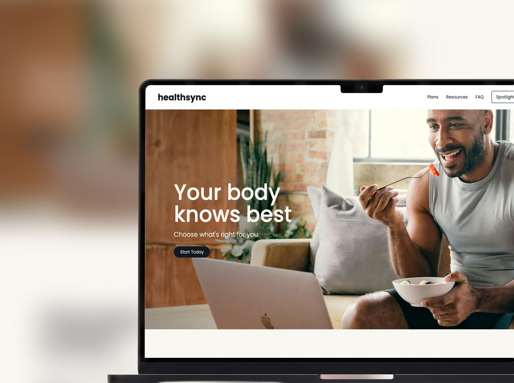
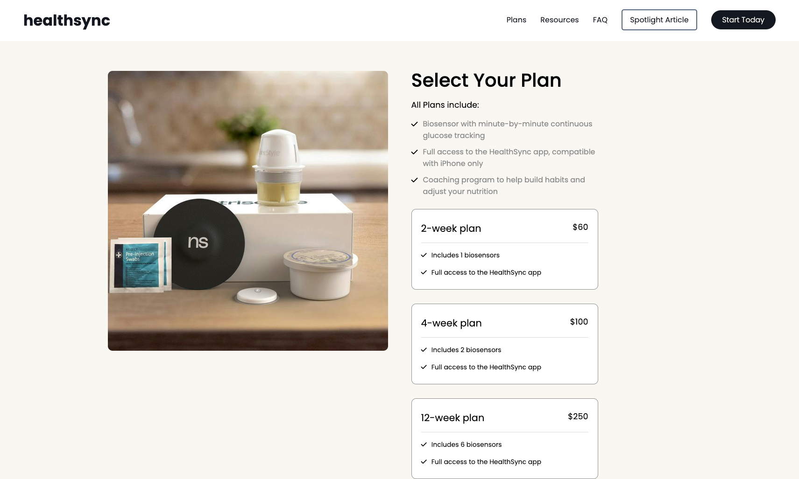
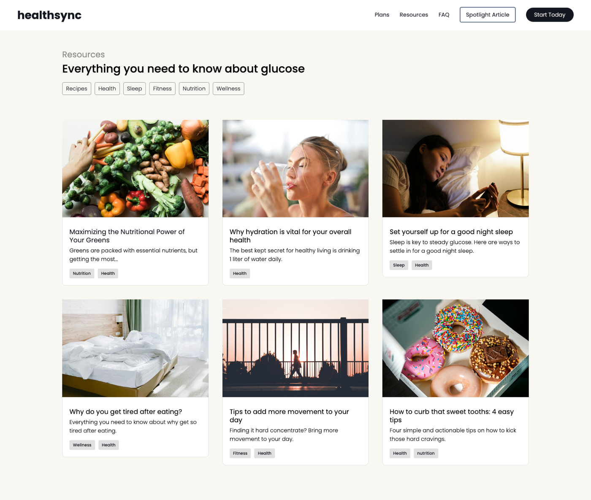

The brief.
HealthSync began as a concept for a CGM (continuous glucose monitor) brand, pairing a device with a companion app for people managing diabetes or tracking how food affects them.
The assignment's real goal was to demonstrate modern CSS layout: Grid and Flexbox. I proposed scoping to a homepage and product overview, then built past that into a full five-page site: home, plans, resources, an article template, and an FAQ. The layout system had to hold up across genuinely different page types, not just one.
Architecture.
Hand-written HTML and CSS, no framework, no build step. The whole site runs on a small set of reusable utility classes, including a CSS custom-property palette (--darkblue, --lightblue, --offwhite) and type-scale classes (.xlg, .lg, .sm-gray) applied across every page, so styling stays consistent without repeating myself.
Layout is Grid where structure is two-dimensional (the pricing cards, the resource grid, the split product sections) and Flexbox where it's one axis (the nav, the FAQ rows). A small vanilla-JS accordion drives the FAQ. Responsive down to mobile, with keyboard-accessible controls and reduced-motion respected.

The interesting problems.
- One system, five different page types. The challenge was not any single page. It was making a homepage, pricing page, card-based resource index, long-form article, and FAQ all feel like one product using a shared utility-class system.
- The pricing layout. A two-column Grid pairs the product image with a stack of plan cards. Each card uses a Flexbox row for the price and divider, so the commerce layout stays aligned as content varies.
- An accessible FAQ accordion. Built from scratch in vanilla JS, it collapses by default, toggles independently per item, rotates its indicator, and exposes
aria-expandedfor screen readers. - A designer's build. The restrained near-black/off-white palette, type hierarchy, and generous whitespace are deliberate brand choices that make the concept read like a real health-tech product.

What I'd build next.
It's a static concept site. The honest next steps are the real product behind it: a working plan-selection and checkout flow, and the app-dashboard view from the original brief (real-time glucose data, trends, insights), which is where it'd shift from a layout showcase into an application.